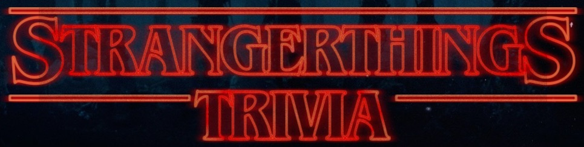
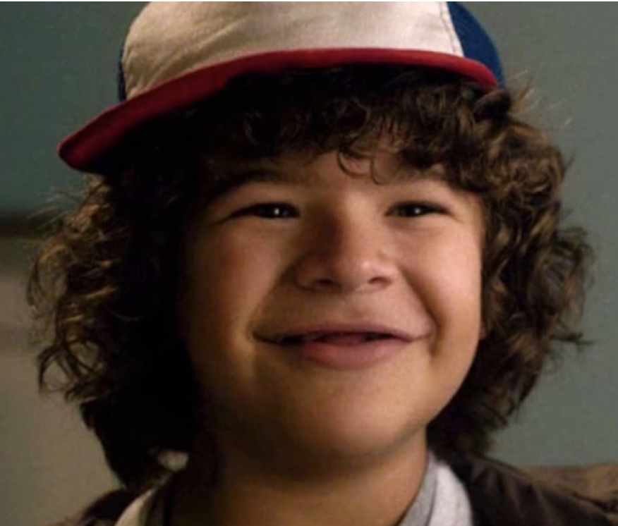

DISCLAIMER: May potentially contain spoilers
Start

Timer here
1. Where does Stranger Things take place?
A. Dawson
B. Franklin
C. Hawkins
D. Derry
2. What is the alternate dimension called?
A. The right side up
B. The land beneath
C. The downside up
D. The upside down
3. Who of the following is not a main character?
A. Dustin
B. Lucas
C. Mike
D. Charlie
4. Who is the shaved headed girl with superpowers?
A. Twelve
B. Seven
C. Thirteen
D. Eleven
5. What is the Sheriffs name?
A. Johnny
B. Captain
C. Topher
D. Hopper
6. Which of the following was Sean Astin, who plays Bob Newby in Stranger things, NOT in?
A. Rudy
B. Lord of The Rings
C. 50 first dates
D. Meet the fockers
7. What was the name of the creature that Dustin found in his trashcan?
A. Garth
B. Dart
C. Bartholomew
D. Craig
8. What kind of car does the Sheriff drive?
A. Ford Bronco
B. Chevy Blazer
C. Dodge Durango
D. GMC Sierra
9. While missing, how does Will communicate with his family in season 1?
A. With a Walkie Talkie
B. Christmas Lights and the Alphabet painted on a wall
C. Through the television signals
D. Messages via carrier pidgeon
10. Who is the new girl in Season 2 who is a phenom in the arcade?
A. Katie
B. Joyce
C. Max
D. Mary